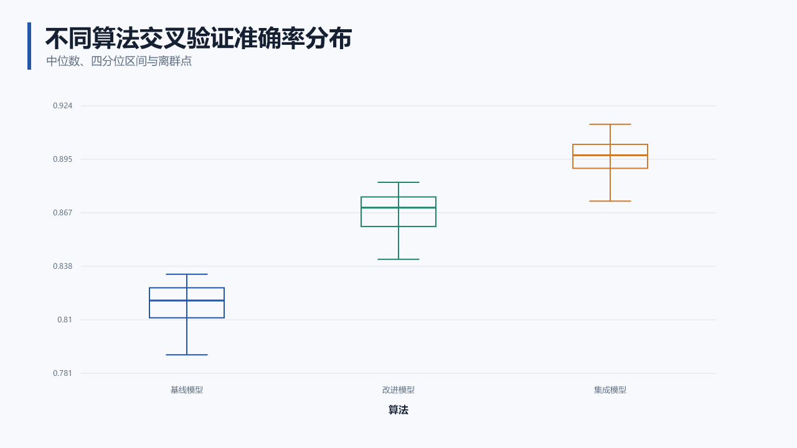
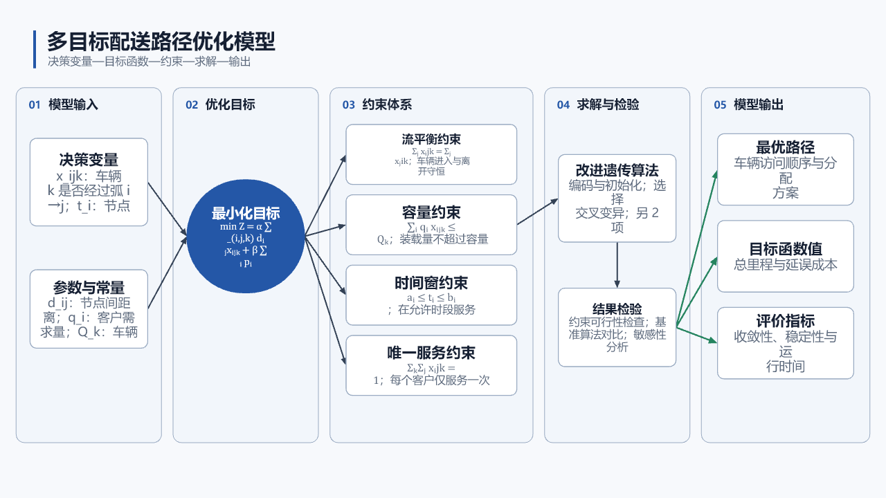
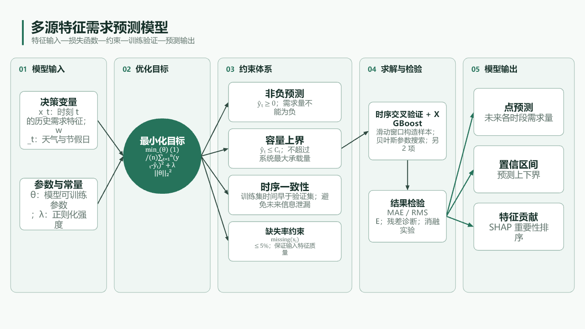
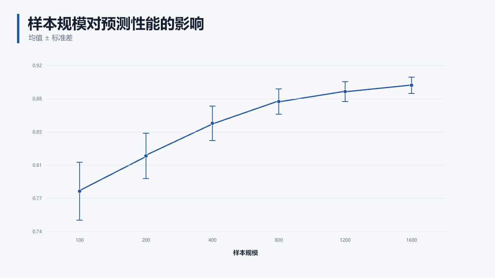
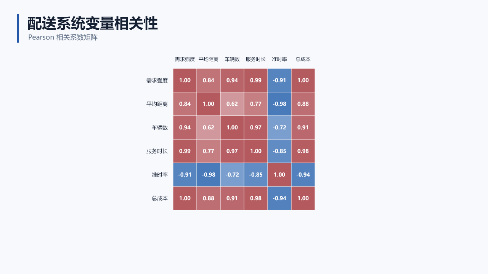
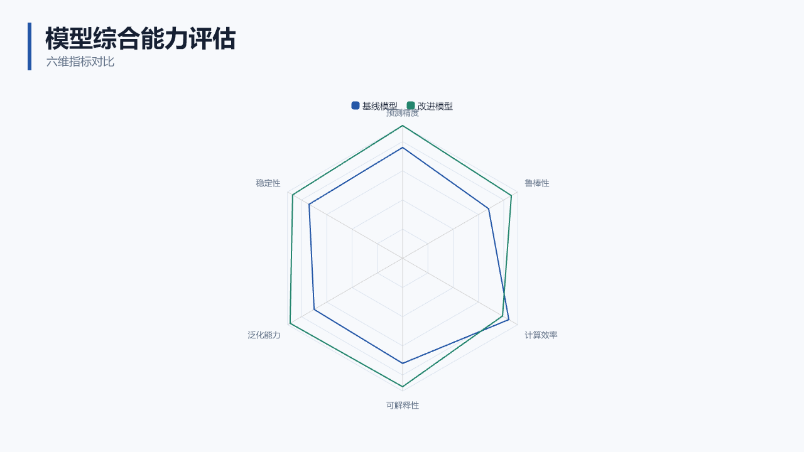

01 · 真实效果
当前能够稳定完成什么
下面直接使用完整示例库中的真实导出预览。每张图都有展示版、浏览器编辑版、SVG、输入数据和可编辑 PPTX。





02 · 双模型入口
选择 Codex 或 Kimi
两种入口最终使用同一个生成器。差异主要在论文内容理解和节点拆分，不在最终文件格式。
推荐新手
Codex：自然语言完成全流程
在 Codex 中打开项目，要求它先阅读当前项目的 SKILL.md。Codex 会判断该生成单图、数据图、模型图、全文插图套件还是完整演示。
✓无需记忆脚本命令，适合第一次使用。
✓可以直接读取论文、CSV、Excel 和 JSON。
✓可以继续修改代码、检查结果并导出 PPTX。
✓当前覆盖全部已交付模块。
复制到 Codex
请先阅读当前项目的 SKILL.md，并使用 html-ppt Skill。 根据我提供的论文内容生成一张技术路线图，不要生成完整 PPT。 要求： - 用于数学建模国赛论文正文； - 近白背景、低饱和学术配色； - 节点、背景框、文字和箭头都可编辑； - 输出 index.html、edit.html、SVG、2× PNG 和可编辑 PPTX； - 不得补造原文中没有的数据、公式、结论和引用。
把论文或附件同时交给 Codex。需要整套插图时，把“生成一张技术路线图”改为“读取整篇论文并规划一套插图”。
已有 Kimi 会员
Kimi：会员 CLI 或开放平台 API
Kimi 负责把论文材料转换为统一语义规划，随后仍由本地布局器生成 HTML、SVG 和编辑页。会员通道与 API 通道不能混用凭证。
✓会员推荐使用官方 Kimi Code CLI 和设备登录。
✓会员 provider：
kimi-cli，模型：kimi-code/k3。✓开放平台 provider：
kimi，模型：kimi-k3。✓当前正式接入论文单图的语义规划。
Kimi Code 会员命令
npm install -g @moonshot-ai/kimi-code@latest kimi login cd D:\html-ppt-skill-dev node scripts/plan-paper-visual-with-model.mjs ` --provider kimi-cli ` --model kimi-code/k3 ` --input input.md ` --prompt prompt.md ` --output output\kimi-member-planning-001
每次重跑使用新的空输出目录。Moonshot 开放平台用户把 provider 改为
kimi、模型改为 kimi-k3，并设置 MOONSHOT_API_KEY。03 · 标准工作流
学生使用只需要四步
先保证内容真实，再选择表达方式。默认生成单张论文图；只有明确要求答辩 PPT 时才进入多页模式。
01
准备材料
论文段落、Markdown、CSV、Excel 或模型 JSON。不要提前把数据截图成图片。
02
说明产物
写清流程图、思维导图、数据图、模型图、整套插图或完整答辩 PPT。
03
查看与编辑
先打开 index.html 看效果，再用 edit.html 拖动节点、分区和箭头。
04
论文交付
论文优先使用 SVG；汇报精修使用 PPTX；同时保存规划 JSON 便于继续修改。
04 · 输出文件
每个文件分别用来做什么
系统不会只交付一张不可修改的截图，而是同时保留展示、编辑、矢量和结构数据。
index.html干净展示版，适合检查最终视觉。edit.html拖动节点、背景框、箭头并修改颜色。diagram.svg论文首选矢量文件，缩放不失真。diagram.png经过浏览器真实渲染的高分辨率位图。visual-plan.json保存节点、坐标、分区和连线关系。chart-plan.json保存数据字段、图型、坐标轴和主题。diagram.pptx节点、文字、框和连接符为原生对象。validation-report.json记录格式、渲染和导出是否通过。05 · 提示词模板
把需求说清楚，结果会更稳定
好的请求需要同时说明内容来源、产物类型、表达重点、风格、编辑要求和禁止补造的内容。
一个完整请求应包含
输入越明确，模型越少猜测。数据图必须给真实数据；数学模型最好给变量、目标、约束、求解和输出。
产物类型输入材料核心关系学术风格编辑要求PPTX禁止补造
通用学生模板
请使用 html-ppt Skill，根据【输入材料】生成一张【图型】。 核心内容： - 【内容 1】 - 【内容 2】 - 【内容 3】 要求： - 用于国赛论文正文； - 近白背景、低饱和学术配色； - 中文清晰，缩小后仍可阅读； - 节点、背景框、文字和箭头可编辑； - 输出 HTML、SVG、2× PNG、JSON 和可编辑 PPTX； - 不得补造输入中没有的数据、公式、结论和引用。
06 · 常见问题
第一次使用最容易遇到什么
为什么提示 Cannot find module？
通常是 PowerShell 当前目录不正确。先执行 cd D:\html-ppt-skill-dev，再运行项目脚本。
为什么输出目录非空就失败？
这是为了保护已有结果。把 run-001 改成 run-002，不要直接覆盖上一次生成文件。
Kimi 会员为什么不能当 API Key？
Kimi Code 会员应使用 kimi login 和 kimi-cli。Moonshot API 使用独立的 MOONSHOT_API_KEY。
没有 Codex 能不能生成？
使用 Kimi CLI 可以完成语义规划并生成 HTML/SVG。PPTX 当前需要包含 @oai/artifact-tool 的 Codex 运行时依赖。
为什么误差棒图不能自动算标准差？
系统不猜测统计定义。请在数据中明确提供标准差、标准误或置信区间列，并指定误差列。
论文内容太多怎么办？
优先拆成主流程图、模型关系图和实验结果图，不要靠无限缩小字号把所有内容塞进一张图。
先看真实效果，再复制提示词开始
完整示例库包含 7 类数据图、3 类模型图、全文插图套件、输入文件、提示词和可编辑 PPTX。